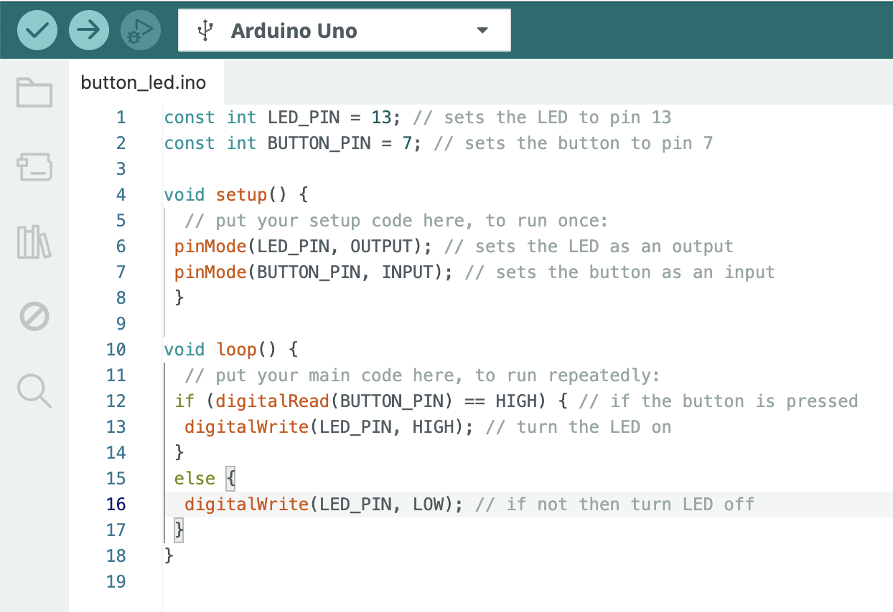
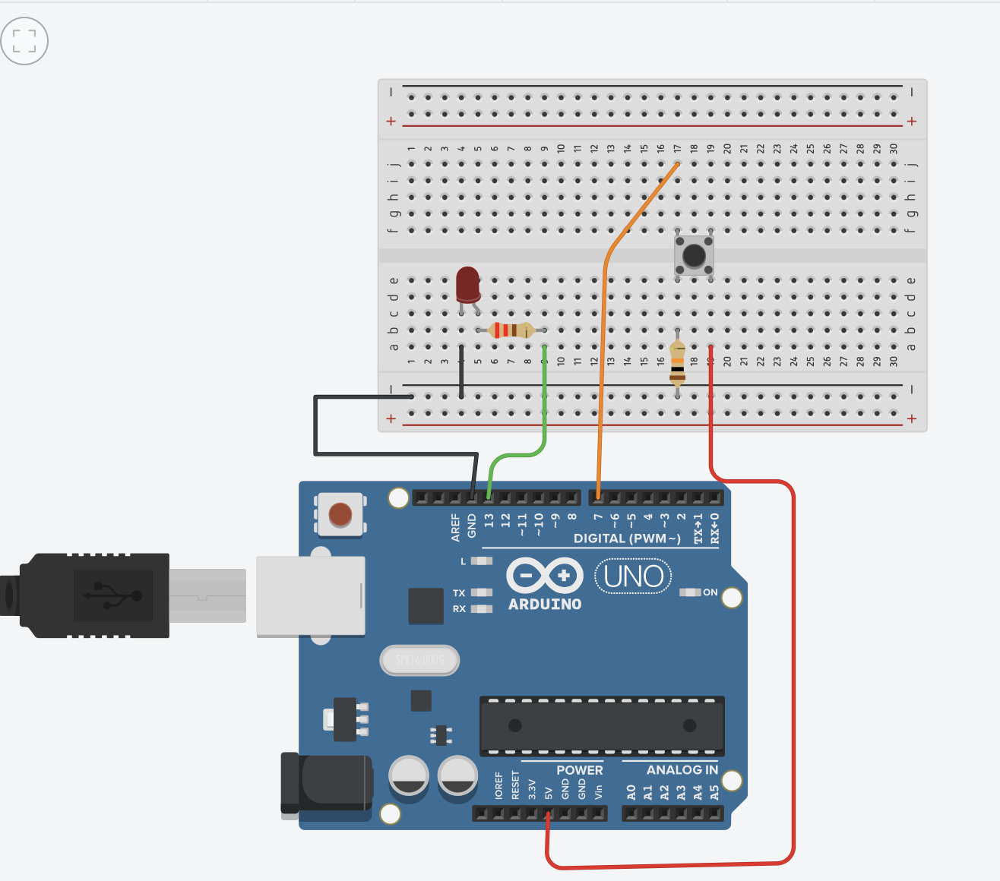

<!DOCTYPE html>
<html lang="en">
<head>
    <meta charset="UTF-8">
    <meta name="viewport" content="width=device-width, initial-scale=1.0">
    <title>Document</title>
</head>
<body>
    
</body>
</html>
<h5> <a href="../projects.html"> <u> <em> Back </em> </u> </a> </h5>
<h1>Button LED</h1>
<p>
    This project introduces the concept of using an Arduino to read input from a physical component and control an output. 
    By connecting a push button and an LED to digital pins, the Arduino turns the LED on or off in response to the button press. 
    It's a great way to learn how microcontrollers handle input signals and interact with hardware through code.
</p>
<p>
    A simple circuit was created using a push button, a 220Ω and 10kΩ resistor, an LED, and a few wires and a button,
    then programmed with basic Arduino functions like digitalRead and digitalWrite. 
</p>




<video src="../../../videos/ButtonLED.mp4" height="400" controls autoplay muted loop> </video>